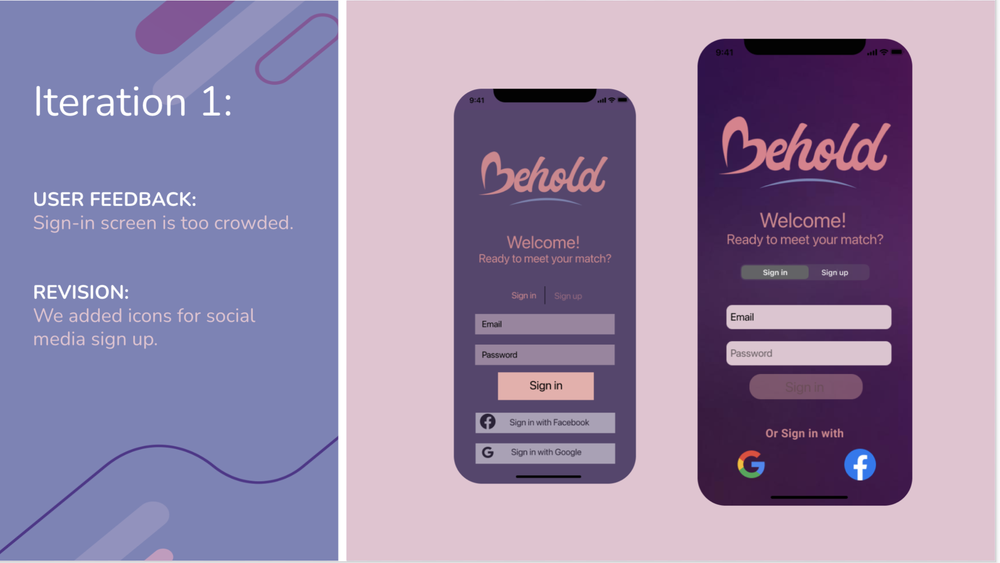

Most of us are aware of the prevalence of online dating in today’s society.
Despite its popularity, many would argue that there is room for improvement in that industry. The truth is, online dating often feels awkward and shallow. As a result, meaningful relationships are hard to find.
As a UX team, we aimed to create a dating app concept that would help users make meaningful connections and find their true match.
To kick our research off, we developed a research plan that would be our guide for conducting 6 user interviews. Our goal was to collect qualitative data about people’s experience with dating apps. We also created an online survey to collect more quantitative data, which garnered 62 responses. As a team, we thoroughly analyzed our data in search of key insights that would drive our decisions for features.
User Persona
Meet Teresa Sunrise, a 27-year-old hairstylist. She has a busy schedule, so she enjoys the convenience of dating apps to meet people, but she feels that common dating apps aren’t conducive to meaningful connections. She, herself, has gone on several dates which never led to anything more. Teresa’s looking for her soulmate, so how might our app help users like Teresa find their true match? And I will pass it off to Jeanna to talk through our ideation and design.
Ideation
Keeping Teresa’s goals in mind, we brainstormed ideas and features that would address her needs and pain points. We did a competitor analysis to see how our app’s features would match up to competitors, and two of us actually signed up for a few days on dating apps.
We pinpointed 3 key features that would help Teresa achieve her goals. We match profiles first, with photos second because our users valued profile information higher than photos. Another common complaint is how awkward dating is - so the second key feature is coaching resources to help Teresa create a compelling profile, initiate conversations and chat. Our third key feature is the revenue model - people do not like multiple fees for small add ons - they like to know what they are going to pay, so the app is free for most users with clear options for tiered features such as promotion in the algorithm.
Wireframes
Focused on these features we each created paper prototypes, which we evolved to a mid-fidelity prototype to get an initial feel of Teresa’s experience.
Brand Identity
Our entire concept is based on the lack of meaningful connections found in dating apps. So we decided to name our app Behold, which is inspired by the common saying “beauty is in the eyes of the beholder.” The look and feel is anchored by purple for the feeling of intimacy, like a romantic dinner at a bistro. Our next phase was testing and iteration, which Ashley will now take you through.
Iterations
]

High-Fidelity Prototype
]
Click the button below to navigate through our high-fidelity prototype.